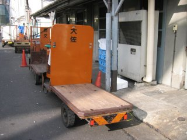

 なんの脈絡もないけど、シャア大佐専用ターレット。
実家に帰省。Interner Explorerばりに脆弱性の出る、参号機(EVA-03)のRealPlayerをアップデート……しようとしたら、Internetに接続されていないといわれる。いやいや、ちゃんとつながっとるやんか。仕方ないので、新規でgetする。なぜか、この方式ならファイルがgetできるのだ。もともと、アップデートも同じ方式だし。次に、前々から調子が悪かったTA(Aterm RS10)のFirmwareを、ver1.04から最新版(最終版?)ver1.11にバージョンアップする。これで、今後に期待。とわいえ、いい加減アクセスラインをADSL(または光)に移行することも、そろそろ本気で考えないとぉ。
ところで参号機(EVA-03)はそうではないのだが、初号機(EVA-00)と弐号機(EVA-02)のExplorerの動きがかなりもっさりしている。初号機などファイルを削除すると、20秒以上反応がなくなる。フリーズやハングは、していない。待っていれば、次の処理に進めることができる。弐号機(EVA-02)からはSafety PassのUSB接続版カードリーダーのデバドラを削除したので、あやしいと思っていたものがなくなってしまった。つまり、初号機との共通点がない。帰宅後に「Custom Windows - Tips 034 エクスプローラの更新を早くする」という情報を見つけたので、そのうち試してみるかも。
実家のネットワーク環境を色々考えるに、とりあへず10BASE-T EthernetのダムHUBはなんとかした方がよいと思った……てゆーか、なんとかしたい。現在使用中のNETGEARのHUB(EN104TP)はデザイン的に好みな上、各ポートにLEDがついているのでよいよい。他メーカーの製品はポートとLEDの位置が離れていて、見にくいorわかりにくいのだ。WebでNETGEAR製品をチェックすると、5ポートのFast Ethernet Switch(FS105)は販売終了とな。8ポートのFast Ethernet Switch(FS108P)か、それとも5ポートのGigabit Ethernet Switch(GS105)か。まあ、せっかくなので後者を第一候補とする。あと、8ポートもいらないしぃ。
有楽町の祖父地図にはなくて、同じく有楽町のビックカメラにも商品はない。まあ、これは「想定内」ってやつ。ちなみにビックカメラではPSPギガパックを買うつもりだったのだが、こっちは完売していた。これも「想定内」だったので、代わりに(?)キングダムハーツIIを予約する。PSPギガパックを買えなかったので、PSP版塊魂は予約しないことにした。アキバへ移動して、T-ZONEへ向かう。しかし、スイッチはない。こ～ゆ～ときは、俺コンでせう。GS105、ありました。というわけで、6,600円で購入。9年半前の1996年に自分が初めて買ったPLANETの10BASE-TのHUBと、同じ値段でGbEスイッチが買えるとはねぇ。